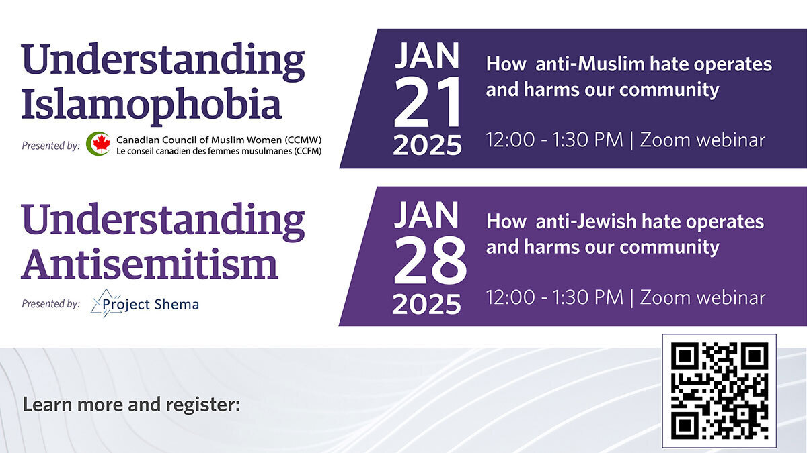

Sensitive engagement case study
Islamophobia & Antisemitism Workshop Series
A high-level case study in responsive communications, cross-unit coordination and careful delivery for a sensitive public programming series.

Overview
Managing communications where trust, timing and judgment mattered.
This workshop series required careful communications and project-management support across two highly sensitive public education sessions: one focused on Islamophobia and one focused on antisemitism.
I worked with multiple contacts across four stakeholder units — JWAM, Sauder, Political Science and central Arts Communications — collaborating on tasks as needed and implementing a responsive communications strategy as priorities, needs and sensitivities evolved.
Confidentiality note
This case study intentionally stays high-level to respect the sensitivity of the topics, the complexity of the presenter context and the institutional care required around the work.
Project context
Multiple stakeholders, changing priorities and sensitive public discourse.
The work required a calm, responsive operating model that could align communications, logistics and stakeholder needs without over-disclosing or overcomplicating the public-facing message.
Coordination with event and program stakeholders.
Cross-unit collaboration and alignment on shared responsibilities.
Stakeholder coordination in support of public programming.
Central communications alignment, review and issue awareness.
My role
Responsive communications and careful project coordination.
Responsive communications strategy
Stakeholder coordination
Cross-unit collaboration
Sensitive issue awareness
Event communications
Risk-aware planning
Approval coordination
Discretion and judgment
Approach
Designed around alignment, flexibility and care.
The work balanced practical delivery with the emotional, reputational and operational sensitivity of the subject matter.
1. Maintain shared alignment
Worked across multiple stakeholder contacts to keep communications and tasks moving while priorities continued to shift.
2. Adapt to changing sensitivities
Adjusted communications approach quickly as needs, concerns and institutional considerations evolved.
3. Coordinate delivery details
Supported timelines, materials, messaging and logistical touchpoints across the workshop series.
4. Protect tone and trust
Kept the public-facing language clear, respectful and appropriately restrained for the subject matter.
5. Collaborate across units
Helped coordinate contributions from JWAM, Sauder, Political Science and central Arts Communications.
6. Support high-attendance delivery
Contributed to workshop communications that supported strong participation, with over 100 attendees at each session.
Why it matters
A leadership example beyond routine event promotion.
- Demonstrated communications judgment in a sensitive institutional environment.
- Balanced audience-building, stakeholder care, operational delivery and issue awareness.
- Managed coordination across four stakeholder units while priorities and sensitivities changed.
- Supported successful delivery of two workshops with over 100 attendees at each session.
- Strengthened experience in high-trust, risk-aware communications and public engagement.